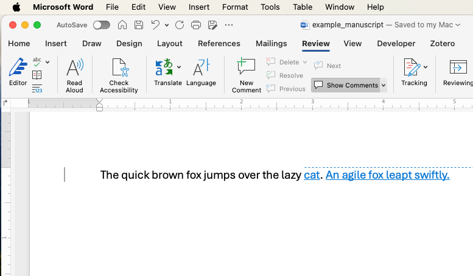

3 Running the Macro: MarkChanges
Before running the macro, you’ll need a sample manuscript loaded into Word. Below is a short example of an imaginary manuscript with tracked changes. Copy and paste this text into a new Word document:
Sample Manuscript:
- Original: “The quick brown fox jumps over the lazy dog.”
- Edited with Track Changes enabled:
- “The quick brown fox jumps over the lazy cat.”
- Inserted: “An agile fox leapt swiftly.”
- “The quick brown fox jumps over the lazy cat.”

Once you’ve pasted this sample into Word, ensure Track Changes is turned on and visible. Now proceed with adding and running the macro as described in the next section.